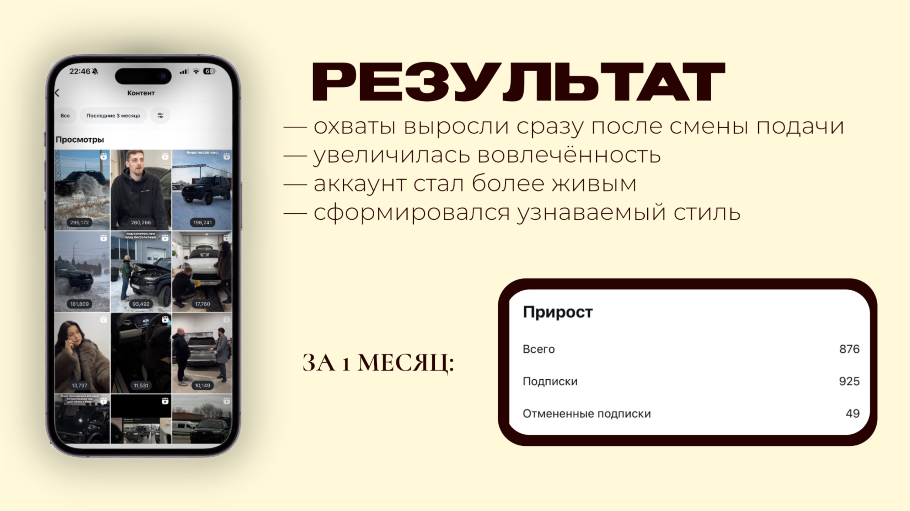

Автосервис / стратегия и Reels
Автосервис
Сместила акцент на юмор и узнаваемые жизненные ситуации. Добавила лёгкую подачу в экспертные темы и сохранила баланс между пользой и развлечением.
1,06 млнпросмотров · 4 янв — 7 фев
+876подписчиков за месяц
Чистый прирост: 925 подписок − 49 отписок. Год в исходной статистике не указан.
Что изменилось в аккаунте
- Внедрила Reels с понятными и жизненными ситуациями.
- Выстроила более узнаваемый стиль коммуникации.
- После смены подачи выросли охваты и вовлечённость, аккаунт стал более живым.



Живые истории вместо сухой экспертизы ↗